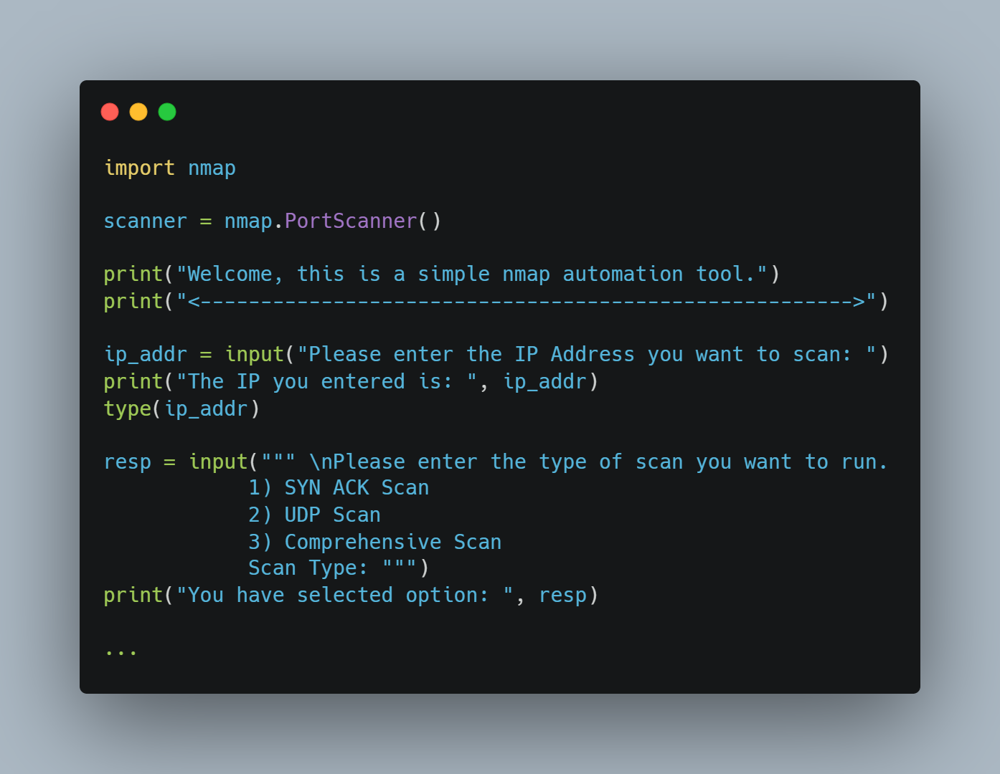
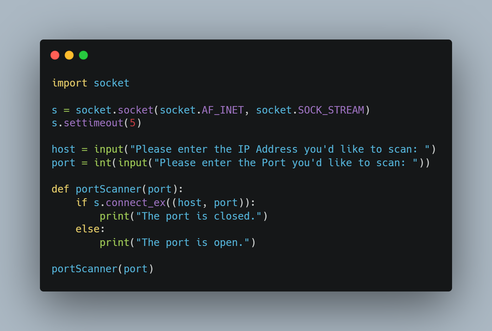

🛠️ My Projects

Nmap Scanner
Automates Nmap scanning with clean output parsing and report generation.
View on GitHub

Port Scanner
Threaded Python-based port scanner for checking open ports on targets.
View on GitHub